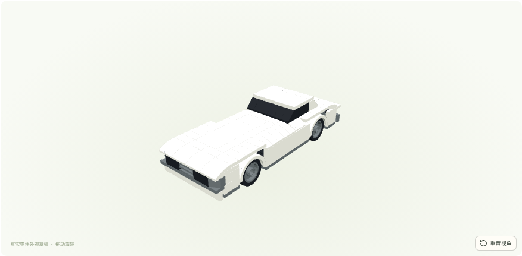
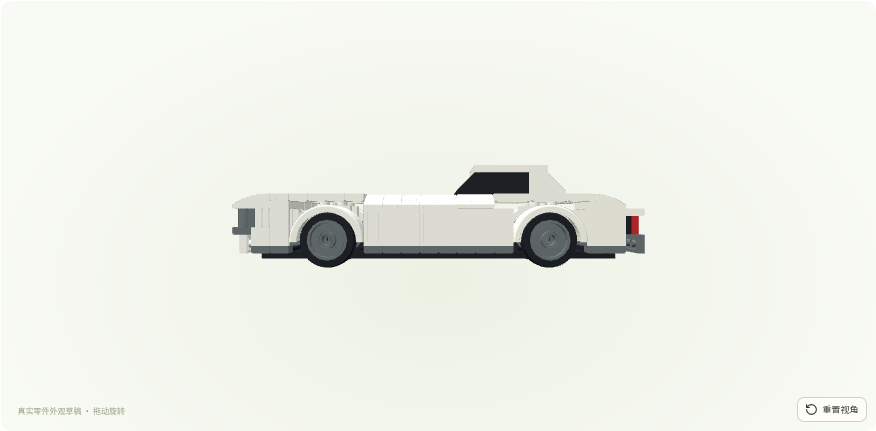
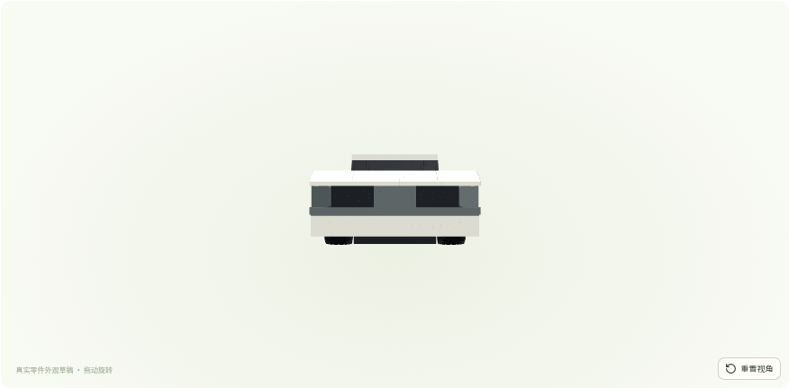
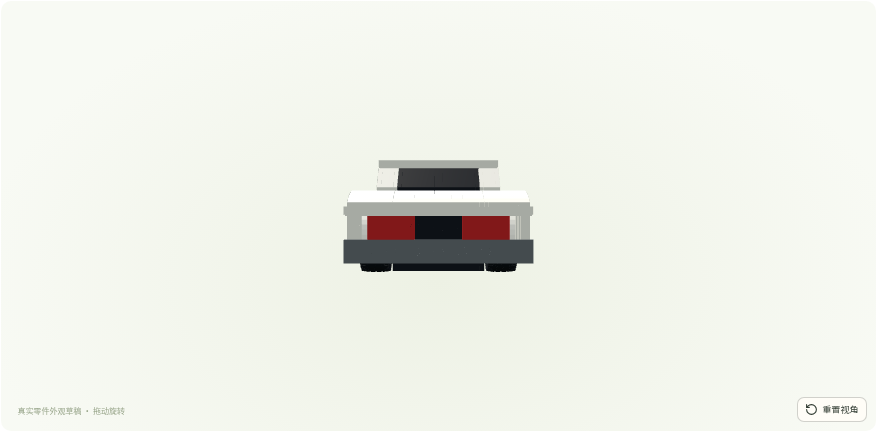
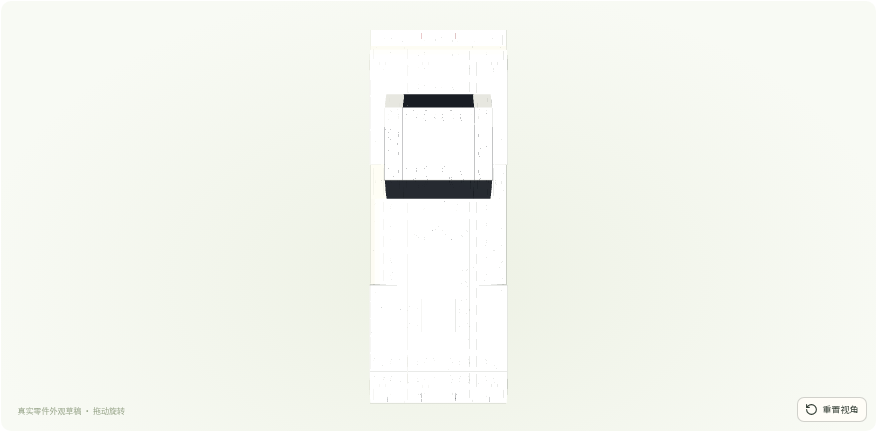

来源为2个套装的第三方数字重建：6配方保守分为4个设计家族，3个家族通过内部数字检查。实际采用前缘与前脸两个家族，4次重复覆盖仍只计1个设计。没有训练模型参数或新增付费调用。
可见变化：前缘更早升高并接平整收边；前脸采用源浅坡/格栅/饰面组合，灰色保险杠由20降为8 LDU。鼻部视觉中点表面由64升至约73.1。中央分隔仍偏宽；窗区、车顶宽、侧面及后翼子板没有新增工艺收益，整体车型还原仍不足。








四个对照均使用同一真实研究/视觉及车型参数。禁用几何与a9a6f1d完全一致；按整个来源套装留出，不是模型泛化证明。
原生模型440×160×112 LDU，轴距240，轮径60。模型只做刚体变换。整车、外部接口占用、轮组和实物未验证，步骤仍为草稿。
最终模型 · 实际BOM · 候选、来源与拒绝 · 完整案例库 · 实际表面量测 · 数字源STEP观察
最终模型哈希：78fce2023ccac65196c5ecbf08fa1e90f5c87f5f104f3116320b6a8f36de5533